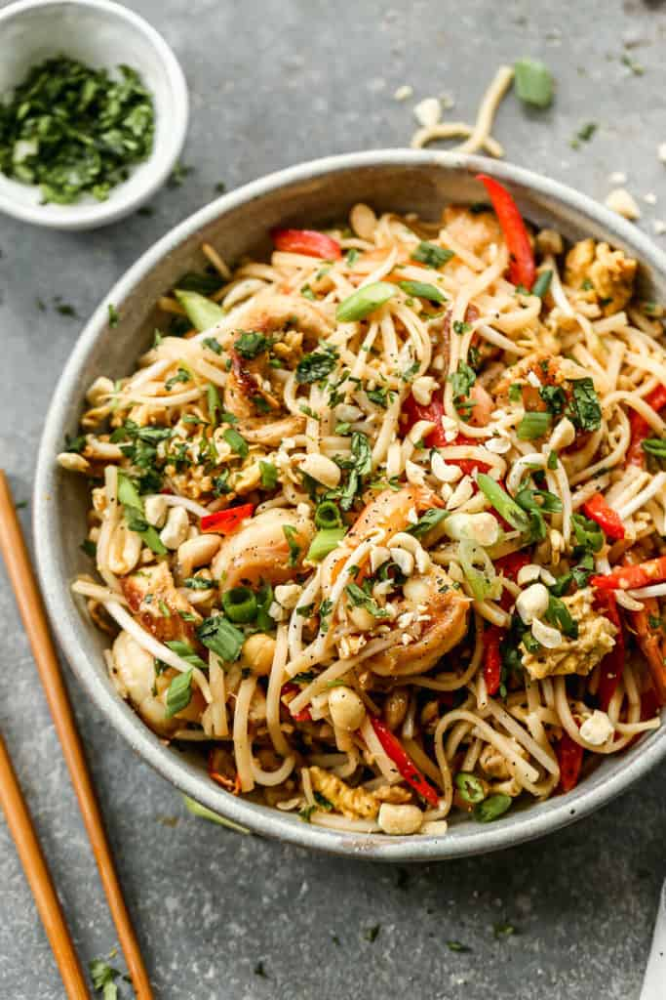

Pad Thai

Pad Thai is stir-fry dish made with rice noodles, shrimp, chicken, or tofu, peanuts, a scrambled egg and bean sprouts. The ingredients are sautéed together in a wok and tossed in a delicious Pad Thai sauce. It’s a common street food in Thailand and one of the most popular menu items at Thai restaurants around the country.
Ingredients
- 8 ounces flat rice noodles
- 3 Tablespoons oil
- 3 cloves garlic , minced
- 8 ounces uncooked shrimp, chicken, or extra-firm tofu , cut into small pieces
2 eggs
- 1 cup fresh bean sprouts
- 1 red bell pepper , thinly sliced
- 3 green onions , chopped
- 2 cup dry roasted peanuts
- 2 limes
- 2 cup Fresh cilantro, chopped
For the Pad Thai sauce:
- 3 Tablespoons fish sauce
- 1 Tablespoon low-sodium soy sauce
- 5 Tablespoons light brown sugar
- 2 Tablespoons rice vinegar , or Tamarind Paste*
- 1 Tablespoon Sriracha hot sauce , or more, to taste
- 2 Tablespoons creamy peanut butter* (optional)
Instructions
- Cook noodles according to package instructions, just until tender. Rinse under cold water.
- Make sauce by combining sauce ingredients in a bowl. Set aside.
- Stir Fry: Heat 1½ tablespoons of oil in a large saucepan or wok over medium-high heat. Add the shrimp, chicken or tofu, garlic and bell pepper. The shrimp will cook quickly, about 1-2 minutes on each side, or until pink. If using chicken, cook until just cooked through, about 3-4 minutes, flipping only once.
- Push everything to the side of the pan. Add a little more oil and add the beaten eggs. Scramble the eggs, breaking them into small pieces with a spatula as they cook.
- Add noodles, sauce, bean sprouts and peanuts to the pan (reserving some peanuts for topping at the end). Toss everything to combine.
- Garnish the top with green onions, extra peanuts, cilantro and lime wedges. Serve immediately!
- Store leftovers in the fridge and enjoy within 2-3 days.